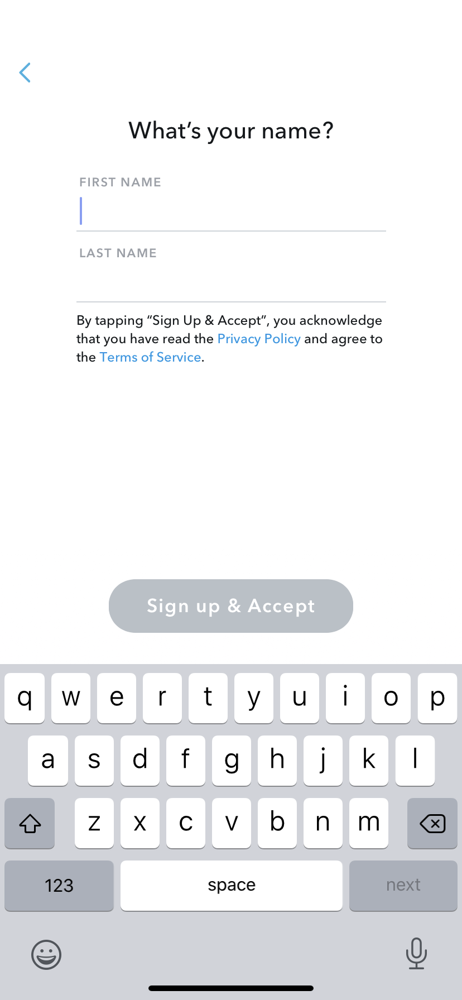

Snapchat

Snapchat has this tool where stories are taken down after 24 hours which would be
useful for students who have any questions or need help with something. It is up
long enough for the teacher to read but also it is automatically taken down after the
24 hour period giving anonymity and privacy to the student.
Stories are also useful for teachers to upload homework, reminders, notes and even
questions for their students. Stories could be used for students to take part in
quizzes or even links to useful videos or articles etc.
Either way the possibilities are near unlimited when it comes to snapchat, it is a very
fun way to educate and stay connected with your students.


There are many ways that snapchat can be used for educational purposes. Here are
some examples:
Q and As are very helpful with snapchat as it is not as formal as using email. It sparks a
better connection between the teacher and student, therefore the student may be
able to take in the information given to them easier.
Another useful tool that snapchat has is the ability to create group chats for
homework, useful links, notes, etc. Whats even better is the group call tool, this may
not work as well with a large group but with a smaller group of students this could be
very useful. It gives that person to person feel when you could be all be in
completely different locations.